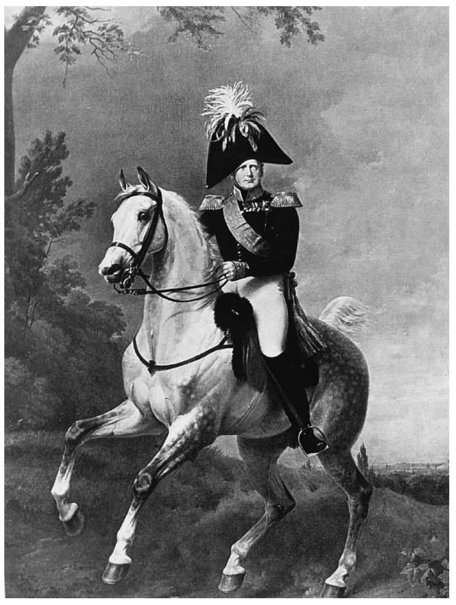
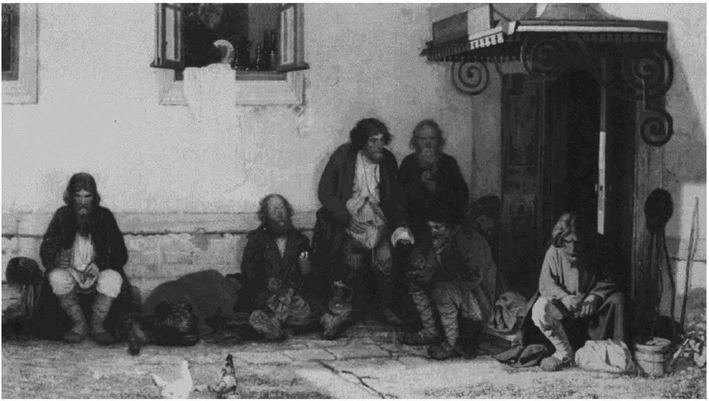

斯拉夫派和西欧派之争的解决，不是由于一方说服了另一方，而是由于迅速发展和扩张的西方社会产生了无法抗拒的压力。这种压力通过俄国和一些西方强国——其中最重要的是英国和法国——之间的克里米亚战争（1853—1856年）而得到戏剧性的说明。战争是在俄国的土地——克里米亚半岛——上进行的，不过，俄国被打败了，不得不接受耻辱的《巴黎条约》。这一条约要求俄国撤回它在黑海的海军部队，拆毁它在黑海沿岸的防御工事。
克里米亚的失败对俄国的民族主义者和斯拉夫派来说，是一个严重打击。与许多西欧派人不同——他们警告说俄国会因没跟上西方的脚步而遭到失败——斯拉夫派人很有信心地预言，俄国专制制度的优越性会导致一个可与1812年对拿破仑的胜利相媲美的胜利。实际上，克里米亚的失败暴露了旧制度的腐败和落后。俄国士兵在1855年和在1812年时一样勇敢地作战，但是，形势却令人绝望：他们的步枪射程只有西方军队的三分之一。他们只能用帆船来对付英国和法国的汽船。他们没有名副其实的医疗或食品后勤保障。

图205 沙皇亚历山大一世（1801—1825年在位）刚继位时是一个温和的改革派，但到1815年之后，他变得愈来愈反动。
旧制度所显示的破产导致旧制度的变革。第一个变革是解放农奴；农奴甚至在战争前就躁动不安了。事实上，在1825年至1855年尼古拉一世统治的30年间，已爆发了500多次农民骚动。随着克里米亚的灾难，农奴们不断上升的压力变得不可抗拒起来，尼古拉的继任者亚历山大二世把解放农奴当作代替革命的唯一办法。他的《解放法令》（1861年3月1日）解放了农奴，将农奴耕种的土地在农奴和贵族地主之间重新分配。这是俄国历史上的一个重大转折点，甚至比美国历史上1863年的《解放宣言》意义更重大。在美国，《解放宣言》仅事关少数黑人，而在俄国，《解放法令》则涉及占压倒多数的人口。解放农奴的影响是如此深远，以致其他一系列改革也被证明是不可避免的，其中包括法院系统和地方政府的改革。
在克里米亚战争之后的数十年间，西欧因决定性地促成了俄国的工业化而进一步削弱了俄国的旧制度。在1917年投入俄国工业的5亿英镑的总额中，有三分之一以上是由外国投资的。工厂工人的数目从1865年的38.1万人上升到1890年的162万人，进而上升到1898年的300万人。到1913年，俄国生产的铁和法国生产的一样多，俄国生产的煤为法国生产的四分之三。
这些发展意味着与1825年十二月党人时的俄国相比，1914年的俄国同欧洲要相似得多。然而，这些不断增长的相似之处正如斯拉夫派所警告的，引起了俄国社会中的某些分裂和冲突。其中之一是农民群众不断增加的骚动和不断增长的政治觉悟。他们绝没有满足于《解放法令》中的条款，他们觉得，这些条款把太大的一部分土地留给了贵族。在以后数十年中，随着农民人数的迅速增加，他们对土地的渴望也相应增长，并变得越来越不满足。农民不满的另一个根源是难以忍受的沉重税收负担。他们不仅要为他们在1861年时得到的土地交纳赎地费，而且还要缴纳各种地方税。此外，他们还要负担俄国工业化的大部分费用，因为很高的保护关税使他们所购买的制成品的费用上升。农民对地主和不得人心的政府官吏的强烈反抗日益频繁，反映了农民不满的范围和强度。
农民的不满由1901年组织起来的社会革命党从政治上表现出来。社会革命党的政纲要点是把国家和贵族的土地分配给农民。与农民的骚动相一致的是随着工业的发展而出现的城市无产阶级的骚动。俄国工业化的早期，同欧洲其他地方一样，包括了对劳动力的严重剥削：16小时工作日、低工资、童工、恶劣的工作和生活环境。在这些条件下，俄国工人与中欧和西欧的工人一样，受到马克思主义学说的影响。因而，一个社会民主党于1898年成立，正如类似的社会党已在欧洲其他地方得到成立一样。俄国的社会民主党也像其他社会党那样，分裂成修正主义派和正统派，即在这种情况下所称的孟什维克和布尔什维克。
20世纪初，除农民和城市工人以外，俄国还有一个中产阶级也对沙皇政权愈益不满。反映这批人观点的政治组织是立宪民主党，通常以其缩写名称将其称为卡德茨（Cadets）。该党建立于1905年，其纲领与英国自由党的纲领相似：实行君主立宪制度，并设立一个类似于英国下议院的议会机构与它相平衡。立宪民主党包括了俄国许多杰出的知识分子和商人。当沙皇在1905年革命以后不得不接受一个民选议会（杜马）时，立宪民主党由于它对议会程序的了解而在审议方面起了领导作用。然而，立宪民主党从未赢得过可与社会民主党和社会革命党的拥护者相提并论的大批追随者。一个原因是，由于商业和工业的发展受到阻碍，俄国的中产阶级人数较少。中产阶级还因为国民经济的很大一部分为外国势力所控制而受到进一步的削弱。此外，立宪民主党特别易屈服于沙皇独裁政府的压力，因为出于他们的中产阶级背景，他们不太愿意以暴制暴。

图206 19世纪80年代，俄国农村的生活十分困苦。虽然沙皇亚历山大二世已于1861年废除了农奴制，但是，农民必须向政府缴纳49年的补偿金，生活标准仍然很低。这幅画描绘的是，农民们在政府机关外面耐心等待，而里面的官员们却在从容地享受着午餐。
20世纪初西方对俄国的影响就是如此。西方的侵入已逐渐破坏了一个独特的、和谐一致的社会；由此产生的种种压力和冲突的反响终致成为1905年和1917年的伟大革命。在考察这些大变动以前，我们将概述日俄战争前俄国的亚洲政策；日俄战争为1905年的革命准备了舞台。